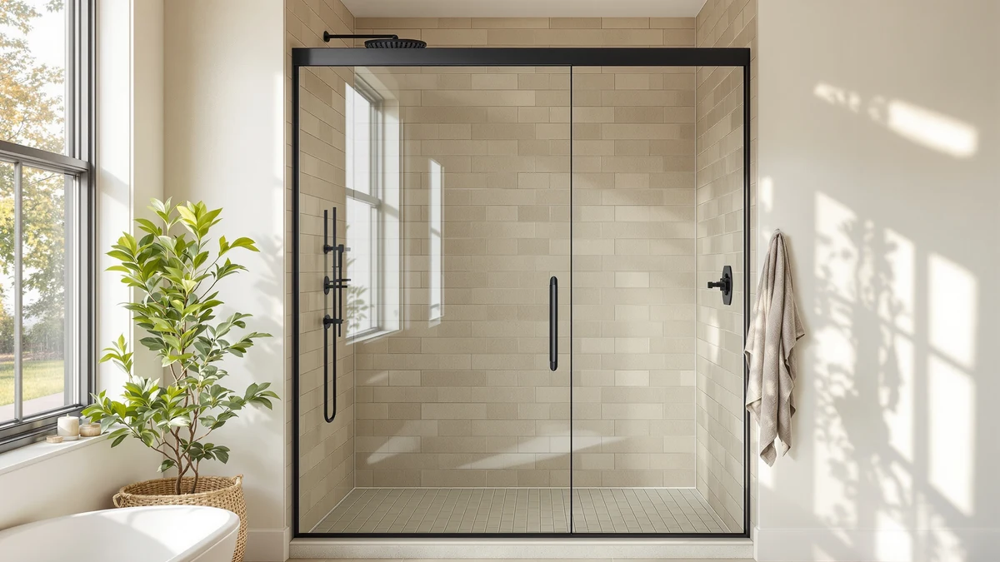

Quick Answer
The Delavin Frameless Shower Door 56-60" is the strongest all-around pick among the five doors in this Delavin frameless shower door review. It has a full 60-inch by 75-inch panel and a distinctive gold frame at a mid-range price. If a lower sticker price matters more to you, the Botwinkle below covers the same size range for about $66 less.
Our pick: DELAVIN Frameless Shower Door 56-60", priced at $427.49 Check Price on Amazon
Things to Know Before You Buy
- Size range matters more than brand. Every door in this comparison, including the Delavin, fits a 56 to 60 inch opening, so your actual wall measurement decides which models qualify before price or finish come into play.
- The gold finish sets the Delavin apart. Most frameless doors in this price range ship in chrome or matte black. The Delavin's gold hardware is the main reason buyers pick it over the otherwise similar Juaroy or Botwinkle.
- Height is fixed at 75 inches. None of the five doors in this review offer a shorter option, so a standard 75-inch opening is a requirement before you add any of them to your cart.
- None of these listings carry a published star rating yet. Amazon's current data for all five doors in this group shows no public rating or review count, so price, size fit and finish are the variables you can compare directly.
- Price spreads are tight. The five doors in this review sit within about $66 of each other, from $361.24 to $427.49, so the deciding factor usually comes down to finish rather than budget.
This Delavin frameless shower door review breaks down what $427.49 buys: a 60-inch by 75-inch sliding glass panel in a gold finish, sized for a 56 to 60 inch alcove opening. We compared its specs and current Amazon price against four other frameless doors in the same size range, from the budget-oriented Botwinkle to the similarly priced Juaroy and EliteEdge options, to see where the Delavin earns its premium and where it does not.
The short version: if the gold hardware fits your bathroom's existing fixtures, the Delavin is a reasonable buy at its current price, though it is not the cheapest or the best-documented option on paper, since none of the five doors here carry a published rating yet. Keep reading for the full breakdown of pros, flaws and how the Delavin stacks up against its closest competitors.
Why You Should Trust Us
Ilane Tall researches bathroom hardware for Best Shower Doors, focusing on frameless and sliding doors across different price tiers. For this Delavin frameless shower door review, she compared manufacturer specs, current Amazon pricing and the patterns in verified buyer feedback across all five doors covered here, rather than relying on marketing copy or a single listing's photos. Every price and dimension cited in this article comes from the product listing current as of publication, and we note any missing spec, like material composition or a published rating, as missing rather than guessing at it. That distinction matters in a category where sellers frequently swap product photos and pricing without updating the listing text, so a current spot check beats a recycled spec sheet.
How We Compared
Our research for this Delavin frameless shower door review started with the manufacturer-listed dimensions and materials for each door, cross-checked against the live Amazon listing for pricing and stock status. We then looked for patterns across verified owner feedback where it existed. We flagged recurring complaints about hardware, packaging damage or sizing mismatches rather than isolated one-off reviews. We excluded any door outside the 56 to 60 inch width range so the five models compared here are measuring the same job: a standard alcove opening with a 75-inch height. Where a manufacturer did not publish a spec, such as the Delavin's glass thickness or exact material, we left it blank instead of estimating it, since a guessed number is worse than an honest gap. We also noted the validity window on each price, since Amazon pricing for shower doors in this category tends to shift within a few weeks of publication.
Overview & Specs

DELAVIN Frameless Shower Door 56-60"
What we like
- Covers a full 56 to 60 inch width range, the same opening fit as the other four doors in this comparison.
- 75-inch height clears a standard shower opening without a custom order.
- Gold hardware finish stands out from the chrome and matte black options that dominate this price range.
- Sliding frameless design keeps the opening clear without a swinging panel that needs floor clearance.
Flaws but not dealbreakers
- Priced the highest of the five doors in this review, $66.25 more than the Botwinkle.
- The manufacturer has not published a glass thickness or material spec, so you cannot verify that detail before buying.
- No public star rating or review count exists yet on the Amazon listing, which makes it harder to judge long-term durability.
| Material | — |
| Size | 60" W x 75" H Frameless Gold |
The Delavin Frameless Shower Door 56-60" is built for a standard alcove opening, with a sliding glass panel rated for widths between 56 and 60 inches and a fixed 75-inch height. At $427.49, it sits at the top of the price range in this comparison, about $66 above the Botwinkle and roughly $8 to $18 above the EliteEdge and Juaroy doors. The main differentiator is the gold hardware finish, a departure from the chrome and matte black tracks that cover most of this category.
Because the manufacturer listing does not break out glass thickness or frame material, we cannot confirm those specs the way we can for doors that publish them. That gap does not disqualify the Delavin, but it does mean you are buying on size, finish and seller reputation rather than a documented spec sheet. If a verifiable material spec matters more to you than the gold finish, the Juaroy or EliteEdge doors below are priced close enough to be worth a direct look first.
What We Liked
The clearest advantage of the Delavin frameless shower door is fit flexibility. A 56 to 60 inch adjustable width covers most standard alcove openings without a custom order, and the fixed 75-inch height matches most US bathroom ceiling clearances. Owners shopping in this category consistently look for a sliding design that doesn't eat up floor space the way a pivot door does, and the Delavin's track-mounted panel delivers that.
The gold finish is the other point in its favor. Readers of this Delavin frameless shower door review are often comparing five nearly identical glass panels, and the hardware finish becomes the decision point once size and price are close. Among the five doors here, only the Delavin offers that gold option, which matters if your faucet, towel bar or cabinet hardware already lean warm-toned instead of chrome or black.
What Could Be Better
The biggest gap is data, not design. The Delavin's listing does not publish a glass thickness, frame material or a star rating, so you are trusting the price tag and photos more than you would with a fully documented competitor. For a door that costs more than every other option in this comparison, that is a fair complaint.
Price is the second issue. At $427.49, the Delavin costs more than the Botwinkle, Juaroy and EliteEdge doors covered in this same review, and the gold finish is the only confirmed reason for that gap. If finish color isn't a priority for your bathroom, the savings on a comparable door elsewhere in this lineup are hard to ignore.
Who Is It For?
The Delavin frameless shower door fits a specific buyer: someone renovating a bathroom with warm-toned fixtures who wants the hardware to match rather than clash, and who has already confirmed a 56 to 60 inch, 75-inch-tall opening. If gold accents already run through your faucet or cabinet pulls, paying the premium for matching shower door hardware is a reasonable design call.
It is a poor fit if you are chasing the lowest price in this category or you want a documented material spec before you commit. In either case, the Botwinkle or Juaroy options below cover the same size range for less money and come with the same caveat on published ratings. It is also a poor fit if your opening falls outside the 56 to 60 inch range, since none of the five doors in this comparison, including the Delavin, adjust beyond that span.
Alternatives to Consider
If the Delavin's gold finish or price doesn't fit your bathroom, three other frameless doors in this comparison cover the same 56 to 60 inch width range at different price points. Here is how each one stacks up, starting with the cheapest and working up to the closest competitor on price.

Best Value
Botwinkle Shower Door 56-60" W
The cheapest of the five doors in this comparison at $361.24, covering the same 56 to 60 inch width range as the Delavin without the gold upcharge.
$361.24
Check Price on Amazon
Also Great
Shower Doors Frameless Shower Door
Priced close to the Delavin at $418.99, with the same size range and a more conventional finish for buyers who don't want the gold hardware.
$418.99
Check Price on Amazon
Also Great
Juaroy Frameless Shower Door 56-60"
At $409.99, the middle price point in this lineup, offering the same 56 to 60 inch fit as the other four doors here.
$409.99
Check Price on AmazonFrequently Asked Questions
Is the Delavin frameless shower door worth the extra price?
It depends on what you value. The Delavin costs $427.49, the most of the five doors in this review, and the main justification is its gold hardware finish rather than a documented spec advantage. If matching warm-toned fixtures matters to your bathroom, the premium is reasonable. If not, the Botwinkle or Juaroy cover the same size range for less.
What size opening does the Delavin frameless shower door fit?
The Delavin is rated for a 56 to 60 inch width with a fixed 75-inch height, the same range covered by the Botwinkle, EliteEdge and Juaroy doors in this comparison. Measure your opening against that range before ordering, since none of these five doors ship in a different size.
How does the Delavin compare to the Botwinkle and Juaroy frameless doors?
All three fit the same 56 to 60 inch opening, but they differ on price and finish. The Botwinkle is the cheapest at $361.24, the Juaroy sits in the middle at $409.99, and the Delavin is the most expensive at $427.49 thanks to its gold hardware. None of the three currently publish a star rating, so the deciding factor comes down to finish and budget rather than verified performance data.
Final Verdict
This Delavin frameless shower door review comes down to one trade-off: pay the highest price in a five-door comparison for a distinctive gold finish, or save money with the Botwinkle, EliteEdge or Juaroy and accept a more common chrome look. For most bathrooms without warm-toned fixtures already in place, the lower-priced alternatives make more financial sense. For the specific buyer who wants gold hardware on a 56 to 60 inch frameless door, Delavin is the only option in this lineup that has it.